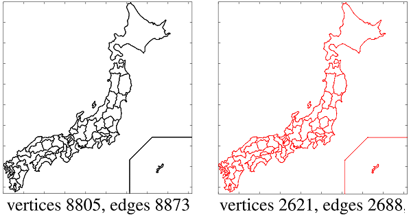
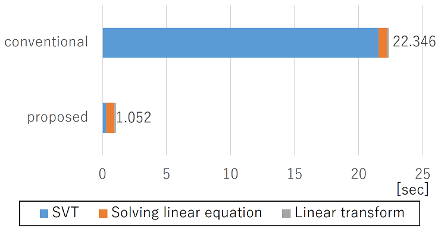
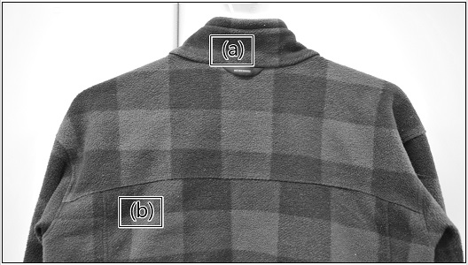
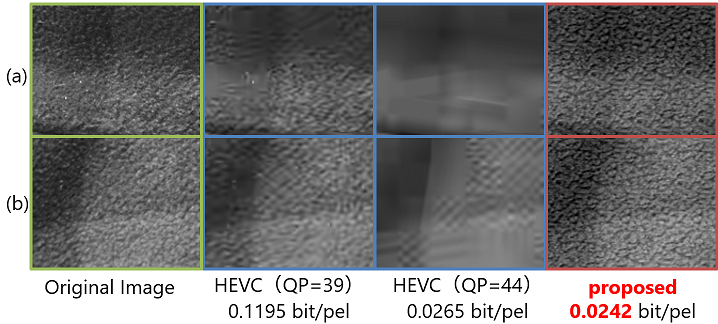
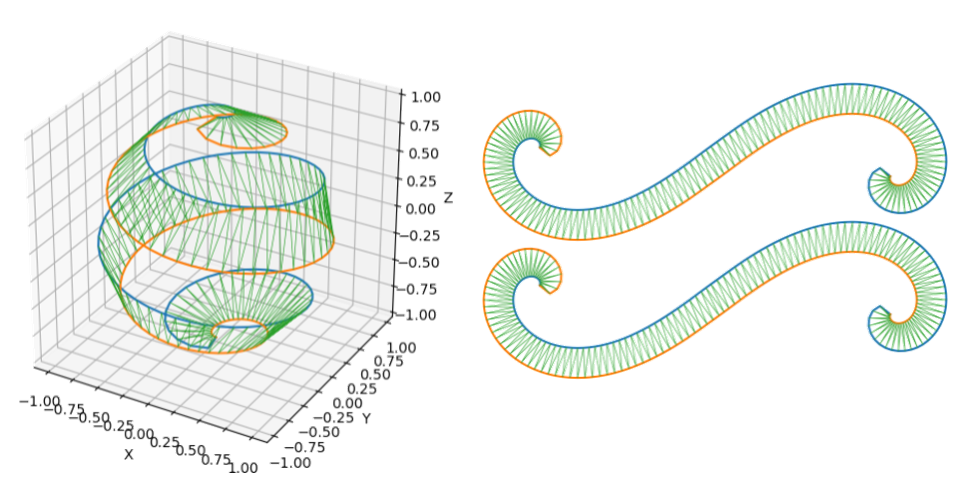
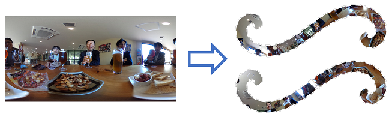

1987年大阪生まれ、大学院卒業まで大阪に居住。 吹奏楽と数学に明け暮れる大学生活。 夏期インターンシップでNTTコミュニケーション科学基礎研究所（神奈川県厚木市）に行き，自由な気風と高い研究レベルに憧れて就職を決意。
NTTに就職後は6ヶ月間NTTドコモ九州（福岡県福岡市）へ研修に行き，携帯電話販売に従事。 その後NTT横須賀研究開発センタ（神奈川県横須賀市）にて本格的に研究活動を開始。
IEEEおよび電子情報通信学会の会員。
データや物理現象に潜在するスパース性/低ランク性をモデル化するために， 多くの研究者達はL1ノルム/核型ノルムを使用してきました。 しかし解析対象が持つ多様な先験情報を定式化するためには， これらのノルムは十分な表現力を持っていないと考えています。
そこでスパース性の新しい正則化関数である尖星準ノルムや，非凸型低ランク正則化関数の加重核型ノルムを用いることで， 信号のスパース性/低ランク性をより柔軟に定式化します。 また，これら正則化関数を用いた最適化問題を解く鍵となる近接写像について，高速な計算方法を検討します。
境界情報や輪郭情報，3Dモデルなどは，多くの頂点が辺によって結ばれるグラフとして定義することができます。 グラフは情報量が多いほど詳細に対象を表現できる一方で，表現やデータ処理に使わない冗長な情報は削減されることが望ましいです。
そこで核型ノルム正則化に基づいたグラフ単純化処理を施し，グラフの重要な情報をできる限り保ちながら， 情報量を削減する方法を提案します。
また，上記処理の計算時間上のボトルネックであった特異値閾値処理について，高速な計算方法を提案します。


従来の映像符号化技術は波形の忠実再現を目標として研究開発され，標準化が進められてきました。 これは大いに成功し，今日のテレビ放送やビデオストリーミングに欠かせない重要技術となっています。
映像符号化の次のステップは，被写体の持つ材質感や場の空気感などを含む，質感の伝送/制御が重要であると考えています。
質感を伝送/制御するために，信号分解をベース技術とする質感映像符号化方式を提案し， 次世代映像符号化方式に寄与することを目指しています。


「信号処理」を核にして、以下を得意としています。


[1] 佐々木崇元，谷田隆一，清水淳，“Texture 合成符号化における非合成領域決定法の検討”，電子情報通信学会論文誌 D，vol. 99，no. 9，pp. 865–867，2016，[link]．
[2] T. Sasaki, R. Tanida, M. Kitahara, and H. Kimata, “Fast-parallel singular value thresholding for many small matrices based on geometric feature of singular values,” in 13th Asia Pacific Signal and Information Processing Association Annual Summit and Conference (APSIPA ASC), 2021, (in press).
[3] T. Sasaki, M. Nakashizuka, and Y. Iiguni, “Audio signal recovery from random sampling with sparsity prior on frequency spectrum,” in International Technical Conference on Circuits/Systems, Computer and Communications (ITC-CSCC), 2011, pp. 447–450.
[4] 佐々木崇元，谷田隆一，木全英明，“高速逆数平方根によるFast Multiple特異値閾値処理の高速化”，電子情報通信学会技術研究報告，vol. 120，no. 321 電子情報通信学会，2021，pp. 230–234，[link]．
[5] 佐々木崇元，北原正樹，清水淳，“低ランク最適化のための高速特異値閾値処理の数理”，第16回 情報科学技術フォーラム (FIT), 第1分冊，2017，pp. 5–12，[link]．
[6] ——，“領域情報符号化における核型ノルム最適化の高速計算法”，第31回 画像符号化シンポジウム (PCSJ)，2016，pp. 140–141．
[7] 佐々木崇元，谷田隆一，清水淳，“グラフ信号の局所線形近似によるグラフ形状単純化”，第15回 情報科学技術フォーラム (FIT), 第3分冊，2016，pp. 1–4，[link]．
[8] ——，“Texture合成符号化における非合成領域決定法の検討”，第30回 画像符号化シンポジウム (PCSJ)，2015，pp. 48–49．
[9] ——，“コントラスト不変性に基づく着目領域のTV-L1画像分解高速化”，第14回 情報科学技術フォーラム (FIT), 第3分冊，2015，pp. 235–236，[link]．
[10] ——，“信号分解とTexture合成に基づく符号化方式の検討”，電子情報通信学会総合大会講演論文集，no. 2 電子情報通信学会，2015，p. 44，[link]．
[11] 佐々木崇元，中静真，飯國洋二，“スパースペナルティを課した信号識別モデルによるスパース周期信号分解”，第27回 信号処理シンポジウム講演論文集 電子情報通信学会信号処理研究専門委員会，2012，pp. 385–390．
[12] ——，“周波数スペクトル上スパース性を用いたランダムサンプリングからの音響信号復元”，第5回関西地区信号処理とその応用研究会，2011．
[13] ——，“周波数スペクトルのスパース性に基づくランダムサンプリングからの音響信号復元”，電子情報通信学会総合大会講演論文集 電子情報通信学会，2011，p. 83，[link]．